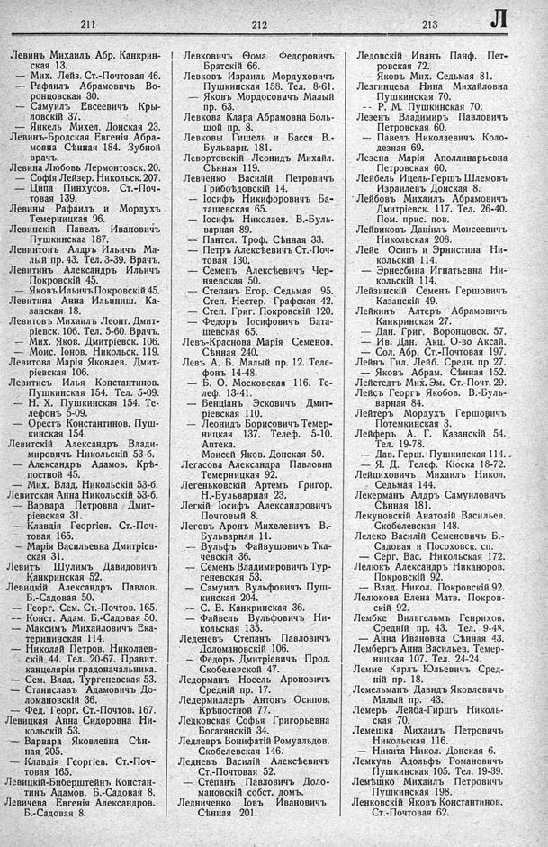

Лист источника 421
Скан

Распознанный текст
211
Левинъ Михаилъ Абр. Канкрин-
ская 13.
— Мих. Лейз. Ст.-Почтовая 46.
— Рафаилъ Абрамовичъ Во-
ронцовская 30.
— Самуилъ Евсеевичъ Кры-
ловскій 37.
— Янкель Михел. Донская 23.
Левинъ-Бродская Евгенія Абра-
мовна Сѣнная 184. Зубной
врачъ.
Левина Любовь Лермонтовск. 20.
— Софія Лейзер. Никольск. 207.
— Ципа Пинхусов. Ст.-Поч-
товая 139.
Левины Рафаилъ и Мордухъ
Темерницкая 96.
Левинскій Павелъ Ивановичъ
Пушкинская 187.
Левинтонъ Алдръ Ильичъ Ма-
лый пр. 43. Тел. 3-39. Врачъ.
Левитинъ Александръ Ильичъ
Покровскій 45.
— Яковъ Ильичъ Покровскій 45.
Левитина Анна Ильиниш. Ка-
занская 18.
Левитовъ Михаилъ Леонт. Дмит-
ріевск. 106. Тел. 5-60. Врачъ.
— Мих. Яков. Дмитріевск. 106.
— Моис. Іонов. Никольск. 119.
Левитова Марія Яковлев. Дмит-
ріевская 106.
Левитись Илья Константинов.
Пушкинская 154. Тел. 5-09.
— Н. Х. Пушкинская 154. Те-
лефонъ 5-09.
— Орестъ Константинов. Пуш-
кинская 154.
Левитскій Александръ Влади-
мировичъ Никольскій 53-б.
— Александръ Адамов. Крѣ-
постной 45.
— Мих. Влад. Никольскій 53-б.
Левитская Анна Никольскій 53-б.
— Варвара Петровна Дмит-
ріевская 31.
— Клавдія Георгіев. Ст.-Поч-
товая 165.
— Марія Васильевна Дмитріев-
ская 31.
Левитъ Шулимъ Давидовичъ
Канкринская 52.
Левицкій Александръ Павлов.
Б.-Садовая 50.
— Георг. Сем. Ст.-Почтов. 165.
— Конст. Адам. Б.-Садовая 50.
— Максимъ Михайловичъ Ека-
терининская 114.
— Николай Петров. Николаев-
скій 44. Тел. 20-67. Правит.
канцеляріи градоначальника.
— Сем. Влад. Тургеневская 53.
— Станиславъ Адамовичъ До-
ломановскій 36.
— Фед. Георг. Ст.-Почтов. 167.
Левицкая Анна Сидоровна Ни-
кольскій 53.
— Варвара Яковлевна Сѣн-
ная 205.
— Клавдія Георгіев. Ст.-Поч-
товая 165.
Левицкій-Биберштейнъ Констан-
тинъ Адамов. Б.-Садовая 8.
Левичева Евгенія Александров.
Б.-Садовая 8.
212
Левковичъ Ѳома Федоровичъ
Братскій 66.
Левковъ Израиль Мордуховичъ
Пушкинская 158. Тел. 8-61.
— Яковъ Мордосовичъ Малый
пр. 63.
Левкова Клара Абрамовна Боль-
шой пр. 8.
Левковы Гишель и Басся В.-
Бульварн. 181.
Левортовскій Леонидъ Михайл.
Сѣнная 119.
Левченко Василій Петровичъ
Грибоѣдовскій 14.
— Іосифъ Никифоровичъ Ба-
ташевская 65.
— Іосифъ Николаев. В.-Буль-
варная 89.
— Пантел. Троф. Сѣнная 33.
— Петръ Алексѣевичъ Ст.-Поч-
товая 130.
— Семенъ Алексѣевичъ Чер-
няевская 50.
— Степанъ Егор. Седьмая 95.
— Степ. Нестер. Графская 42.
— Степ. Григ. Покровскій 120.
— Федоръ Іосифовичъ Бата-
шевская 65.
Левъ-Краснова Марія Семенов.
Сѣнная 240.
Левъ А. Б. Малый пр. 12. Теле-
фонъ 14-48.
— Б. О. Московская 116. Те-
леф. 13-41.
— Бенціанъ Эсковичъ Дмит-
ріевская 110.
— Леонидъ Борисовичъ Темер-
ницкая 137. Телеф. 5-10.
Аптека.
— Моисей Яков. Донская 50.
Легасова Александра Павловна
Темерницкая 92.
Легеньковскій Артемъ Григор.
Н.-Бульварная 23.
Легкій Іосифъ Александровичъ
Почтовый 8.
Леговъ Аронъ Михелевичъ В.-
Бульварная 11.
— Вульфъ Файвушовичъ Тка-
чевскій 36.
— Семенъ Владимировичъ Тур-
геневская 53.
— Самуилъ Вульфовичъ Пуш-
кинская 204.
— С. В. Канкринская 36.
— Файвель Вульфовичъ Ни-
кольская 135.
Леденевъ Степанъ Павловичъ
Доломановскій 106.
— Федоръ Дмитріевичъ Прод.
Скобелевской 47.
Ледорманъ Носель Ароновичъ
Средній пр. 17.
Ледермиллеръ Антонъ Осипов.
Крѣпостной 77.
Ледковская Софья Григорьевна
Богатянскій 34.
Ледлевръ Бонифатій Ромуальдов.
Скобелевская 146.
Ледневъ Василій Алексѣевичъ
Ст.-Почтовая 52.
— Степанъ Павловичъ Доло-
мановскій собст. домъ.
Ледниченко Іовъ Ивановичъ
Сѣнная 201.
213
Ледовскій Иванъ Панф. Пет-
ровская 72.
— Яковъ Мих. Седьмая 81.
Лезгинцева Нина Михайловна
Пушкинская 70.
-- Р. М. Пушкинская 70.
Лезенъ Владимиръ Павловичъ
Петровская 60.
— Павелъ Николаевичъ Коло-
дезная 69.
Лезена Марія Аполлинарьевна
Петровская 60.
Лейбель Ицель-Гершъ Шлемовъ
Израилевъ Донская 8.
Лейбовъ Михаилъ Абрамовичъ
Дмитріевск. 117. Тел. 26-40.
Пом. прис. пов.
Лейвиковъ Даніилъ Моисеевичъ
Никольская 208.
Лейе Осипъ и Эрнистина Ни-
кольскій 114.
— Эрнесбина Игнатьевна Ни-
кольскій 114.
Лейзинскій Семенъ Гершовичъ
Казанскій 49.
Лейкинъ Алтеръ Абрамовичъ
Канкринская 27.
— Дан. Григ. Воронцовск. 57.
— Ив. Дан. Акц. О-во Аксай.
— Сол. Абр. Ст.-Почтовая 197.
Лейнъ Гил. Лейб. Средн. пр. 27.
— Яковъ Абрам. Сѣнная 152.
Лейстедтъ Мих. Эм. Ст.-Почт. 29.
Лейсъ Георгъ Якобов. В.-Буль-
варная 84.
Лейтеръ Мордухъ Гершовичъ
Потемкинская 3.
Лейферъ А. Г. Казанскій 54.
Тел. 19-78.
— Дав. Герш. Пушкинская 114.
— Я. Д. Телеф. Кіоска 18-72.
Лейциховичъ Михаилъ Никол.
Седьмая 144.
Лекерманъ Алдръ Самуиловичъ
Сѣнная 181.
Лекуновскій Анатолій Васильев.
Скобелевская 148.
Лелеко Василій Семеновичъ Б.-
Садовая и Посоховск. сп.
— Серг. Вас. Никольская 172.
Лелюкъ Александръ Никаноров.
Покровскій 92.
— Влад. Никол. Покровскій 92.
Лелюкова Елена Матв. Покров-
скій 92.
Лембке Вильгельмъ Генрихов.
Средній пр. 43. Тел. 9-48.
— Анна Ивановна Сѣнная 43.
Лембергъ Анна Васильев. Темер-
ницкая 107. Тел. 24-24.
Лемме Карлъ Юльевичъ Сред-
ній пр. 18.
Лемельманъ Давидъ Яковлевичъ
Малый пр. 43.
Лемеръ Лейба-Гиршъ Николь-
ская 70.
Лемешка Михаилъ Петровичъ
Никольская 116.
— Никита Никол. Донская 6.
Лемкуль Адольфъ Романовичъ
Пушкинская 105. Тел. 19-39.
Лемѣшко Михаилъ Петровичъ
Пушкинская 198.
Ленковскій Яковъ Константинов.
Ст.-Почтовая 62.
Л